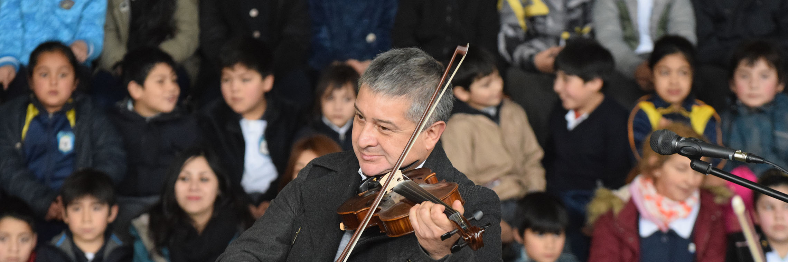
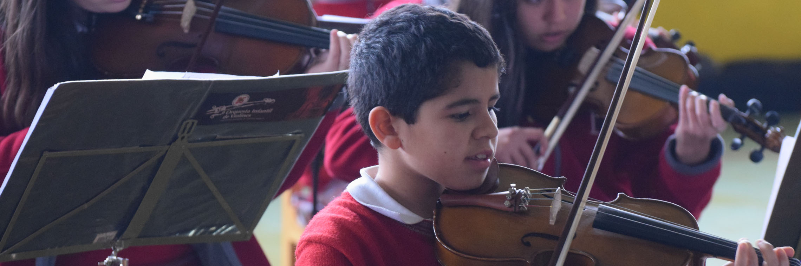
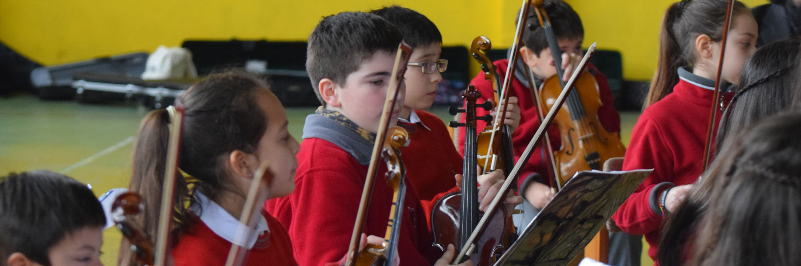
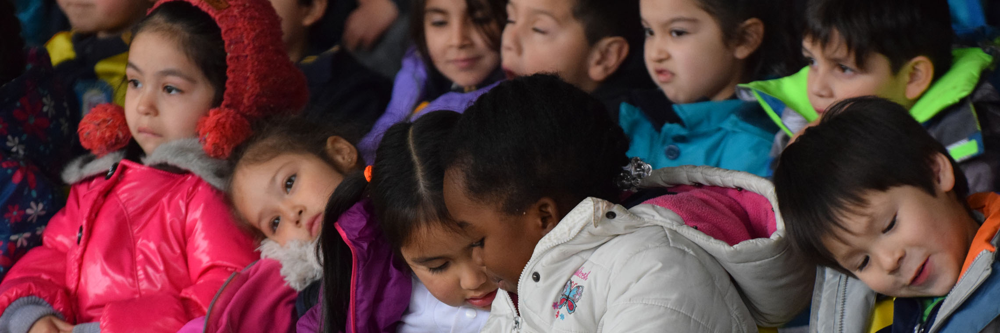

<!DOCTYPE html>
<html lang="en"></html>
<head>
  <meta charset="UTF-8"/>
  <title>Escuela Libertad Puerto Montt</title>
  <link rel="stylesheet" href="../css/noticia.css"/>
  <script src="../js/jquery-3.2.1.min.js"></script>
  <script src="../js/slide_noticia.js"></script>
</head>
<body>
  <div class="banner1"></div>
  <div class="banner2"></div>
  <section id="nav_cero">
    <div class="box_one">
      <h1>Escuela <span>Libertad</span></h1>
    </div>
    <div class="box_two">
      <nav>
        <ul>
          <li><a href="/index.html">Home</a></li>
        </ul>
        <ul>
          <li><a href="/historia.html"><span>Historia</span></a></li>
        </ul>
        <ul>
          <li><a href="/integracion.html">Integracion</a></li>
        </ul>
        <ul>
          <li><a href="/planespropios.html"><span>Talleres</span></a></li>
        </ul>
        <ul>
          <li><a href="/ProyectoEducativo.html">PEI</a></li>
        </ul>
      </nav>
    </div>
  </section>
  <div class="wrap">
    <h3>8 y 9 de Agosto de 2017</h3>
    <div class="cabenoticia">
      <h1>Orquesta Infantil</h1>
    </div>
    <ul class="slider">
      <li></li>
      <li></li>
      <li></li>
      <li></li>
    </ul>
    <ol class="pagination"></ol>
    <div class="cab__noticia">
      <h1>Visita de Orquesta Infantil de Colegio Alemán</h1>
    </div>
    <div class="noticiauno">
      <div class="not__parr"> 
        <p>La Orquesta del Instituto Alemán de puerto Montt, conformada por 38 alumnos, e instrumentos tales como violín, violas, violonchelos, piano etc. Nos deleitaron en una presentación que duro alrededor de 1 hora y media. Escuela Libertad y toda su comunidad educativa agradece esta gestión y la posibilidad de acceder a este tipo de conciertos, esperamos volver a verlos. A continuación una Reseña de esta especial Orquesta: </p>
        <p>“La Orquesta infantil del Instituto Alemán de Puerto Montt, nace en abril del año 2014, por iniciativa de su Rector Sr. Franz Sieber, está conformada por 37 alumnos de 4tos, 5tos, 6tos y 7mos Básicos, es una propuesta cultural en donde la premisa principal es elevar el desarrollo educacional, social y cultural de los alumnos que participan en este he de hermoso proyecto, bajo la batuta de su profesor y Director Sr. Alexis Velásquez Lafuente se han presentado en importantes eventos culturales organizados en el Instituto Alemán, en octubre del año 2015 fueron invitados a participar del 4to Encuentro de Orquestas Infantiles organizado por la Universidad San Sebastián sede Puerto Montt, en noviembre del 2016 fueron invitados a dar un Concierto Didáctico a todo el plantel educacional del Colegio Sagrada Familia de la Comuna Rio Negro Hornopirén, en donde los pequeños músicos se lucieron, en agosto del 2017 se presentaron en el acto solemne de aniversario del Servicio de Salud en el Hotel Diego de Almagro. <br>El verdadero desarrollo humano, se consigue por medio de la educación, ya que permite el crecimiento constante e íntegro de la persona. El Instituto Alemán de Puerto Montt, consciente de su rol ante sus alumnos y la sociedad, no solo valora el proyecto académico en los alumnos, sino busca conseguir en ellos estados superiores de desarrollo, tal es el caso de los niños que participan de este hermoso proyecto cultural.”</p>
        <p>
          Escuela Libertad esperará ansiosa de volverlos a ver, y agradece a quienes pudieron facilitar esta presentación.
          
        </p>
      </div><div class="fb-post" data-href="https://www.facebook.com/media/set/?set=a.261316597693116.1073741872.100014443334294&amp;type=1&amp;l=9406a4b3a4" data-width="500" data-show-text="true"><blockquote cite="https://www.facebook.com/media/set/?set=a.261316597693116.1073741872.100014443334294&amp;type=3" class="fb-xfbml-parse-ignore">Posted by <a href="https://www.facebook.com/esc.libertad.39">Esc Libertad</a> on&nbsp;<a href="https://www.facebook.com/media/set/?set=a.261316597693116.1073741872.100014443334294&amp;type=3">miércoles, 6 de septiembre de 2017</a></blockquote></div>
    </div>
    <div class="box__comentario">
      <div class="box__comentario"></div><!-- Script de Comentario-->
<script>(function(d, s, id) {var js, fjs = d.getElementsByTagName(s)[0];if (d.getElementById(id)) return;js = d.createElement(s); js.id = id;js.src = "//connect.facebook.net/es_ES/sdk.js#xfbml=1&version=v2.9";fjs.parentNode.insertBefore(js, fjs);}(document, 'script', 'facebook-jssdk'));</script><div class="fb-comments"data-href="http://www.elibertad.cl/noticias/noticia8.html" data-width="100%" data-numposts="5"></div><div id="fb-root"></div>
    </div>
    <footer>
      <div class="direccion"><span class="icon-compass"></span>
        <h1>Dirección: Iquique 230, Poblacion Libertad - Puerto Montt</h1>
      </div>
      <div class="telefono"><span class="icon-phone"></span>
        <h1>Telefono : 65 2 484525</h1>
      </div>
      <div class="mail"><span class="icon-inbox"></span>
        <h1>libertad@escuelas.dempuertomontt.cl</h1>
      </div>
      <div class="face"><a href="https://www.facebook.com/esc.libertad.39"><span class="icon-facebook-official"></span></a></div><span class="icon-youtube-square"></span>
    </footer>
  </div>
</body>